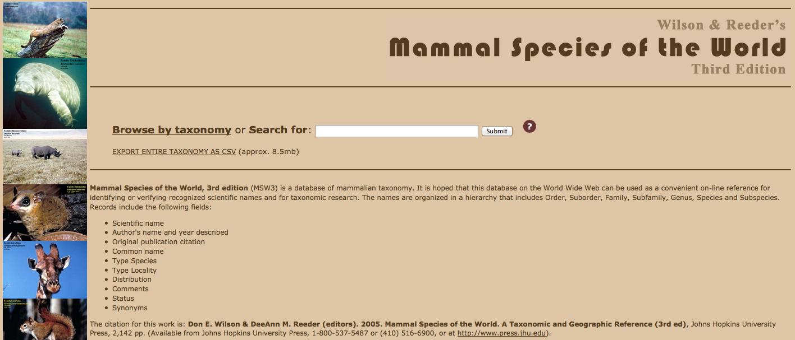
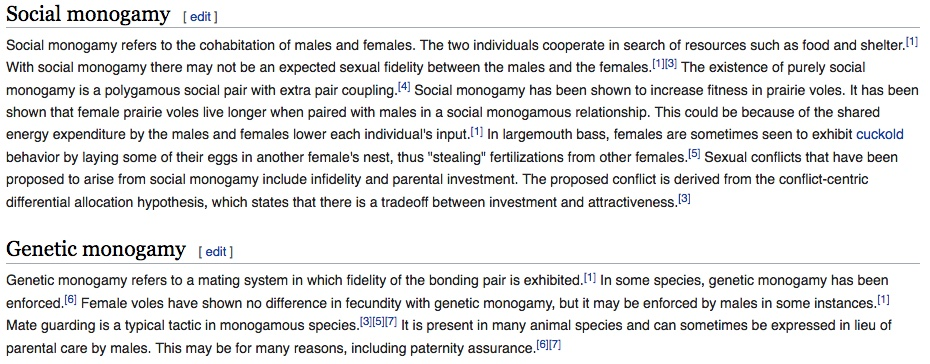
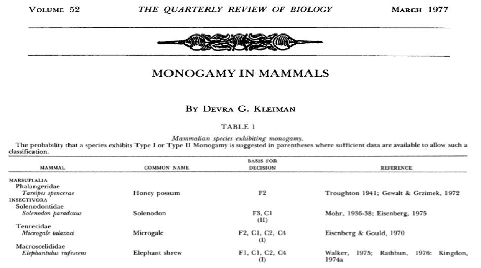
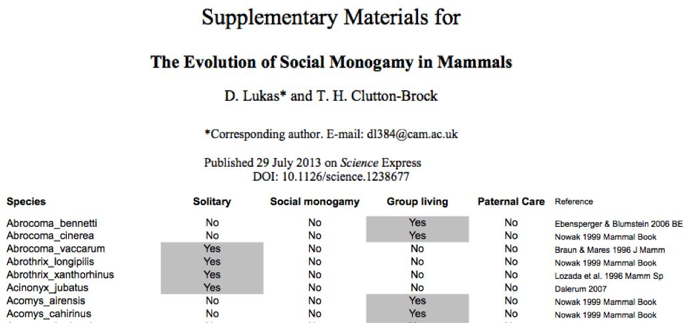

|
Blog: how to find data for comparative analyses
While I was a visiting researcher at NCEAS, I led a roundtable on how to extract data from published sources for comparative analyses.
Phylogenetic comparative methods
In biology, we frequently perform comparisons, across all levels we can
measure: from comparing DNA sequences through different cell types,
between individuals, to across populations and species. Here, I am
going to focus on comparisons of the latter kind: phylogenetic comparisons
which give us an understanding for the diversity of strategies that
exist in nature and allow us to test ideas about adaptation.
These comparisons start from observations of currently existing
populations (though, if available, observations on ancestral
populations can be integrate). Since it is generally not feasible to
collect all these observations as part of the project, comparative
approaches tend to rely on combining already existing observations. In
this blog, I am reflecting on some of my experiences of how to
structure such a search and where to find the relevant information.
Before starting the data collection:
You have your hypotheses and made your predictions - now
you want to collect as many observations as possible to have a powerful
sample size. But how can you make your search systematic so you do not
miss any information and how do you know when to stop - while at the
same time needing to be open to the possibility that the data might not
be presented consistently in the same way? For this, it helps to
consider:
What do you want data for?
This will be your sample and make the search systematic. So you have to
decide on a list of entries you are going to look for before you start
your search.
|
What do you want data on?
This are usually the observations you are interested in. This is where
it might be helpful to have a broad definition and collect information
that you might later combine or omit.
|
For example, I did a project on the evolution of monogamy in mammals. I
could have searched for all instances of monogamy and thereby creating
a list of species where this behaviour occurs. However, with this
approach I would not have known when to stop (have I found all species
with monogamy?) and the term monogamy has been used inconsistently in
the past to describe different phenomena. Therefore, this is what I did:
What do you want data for?
For as many mammalian species as possible.

For mammals, there are lists
that include all currently recognised species (more than 5400 by now).
This provides a systematic list to work through: search for
observations on the first in alphabetical order, and you know you are
done when you get to the end of the list. It will also mean that there
is no bias in which observations are being considered and unlikely that
you will miss any.
|
What do you want data on?
On the social system of species

Simply searching for "monogamy" would not have worked since (i) the
term has more than one meaning (so irrelevant information would have
come up) and (ii) other terms exist which describe what I was
interested in (e.g. pair formation). Accordingly, I collected
information on the spatiotemporal distribution of females and of males,
and used this to determine which species are socially monogamous and
which are not.
|
Data detection:
There are different places that might contain relevant
observations for your study. In general, the distinction is between
secondary and primary sources.
Compilations in secondary literature
This
is what I usually start and end with. To start, they give an overview
of how much information might be available and can give you ideas about
the definitions you might want to use for your variables. They can also
serve as a final check to understand whether your observations fit with
what has previously been reported.
There are three types of seconday literature. There are different types of
information in these three kinds of publications: sometimes it is more
focused on the variable you are interested at other times more on
providing natural history information on various species. They usually
contain references to the primary literature, so they are also useful
to identify where you might get information on direct observations (see
right).
1) books
Books
often combine information on different populations and species. They
can show the main taxonomic groups that have been studied, details on
individual species, and they can indicate how traits are being described.
2) reviews

Reviews
discuss terminology and provide pointers to the primary literature.
They also discuss open questions which can help to place ones' own
hypothesis into context.
3) encyclopedias
Online initiatives are starting to provide large amounts of information on a diversity of topics. These range from general topic efforts such as wikipedia through more specific efforts, such as ebird, the global biodiversity initiative, or the animal diversity web.
4.) data repositories
Comparative studies tend to
include their datasets alongside their publications. A way to find
their datasets is by searching through repositories. The main ones for
biological research are Data One (their search function also covers other repositories), the Knowledge Network for Biodiversity, and DataDryad. There are also other more general repositories, either by institutions or by publishers.
|
Original information in primary literature
This
is the reality check. While the secondary literature might contain
information on many species, checking the primary literature makes sure
that the information fits with the definition you are using and that it
is correct and it might contain additional information that would be
useful later (in general, write down as much as you can).
There are different types of
primary literature and accordingly it is best to combine different
approaches to find this literature:
1) through references and cross-references

The books and reviews from the secondary literature usually link to primary information. From
there, backward (going through the reference list) and forward
(checking articles that cite this publication) can lead to additional
relevant literature.
2) through search engines
On the one hand, there are the
search engines that find peer-reviewed scientific articles - such as
Pubmed, Google Scholar, or Web of Knowledge. Most comparative analyses
rely on information from peer-reviewed articles as the information
comes in a more standarized form. As you go through these articles, you might want to
consider that even if they report on a hypothesis that is unrelated
to your field of study they might still contain relevant information, for
example in the method section describing the study system. On the other
hand, I also use regular internet search engines - such as Duckduckgo,
Ecosia, or Google. These can be helpful to identify a diversity of
other relevant primary information, such as PhD theses, guide books
based on primary observations, or reports from conservation or
governmental agencies. I include this kind of information if the author
seems to have been on location.
3) through the library
Search engines usually do not cover books. In addition, information published several decades ago has often not been digitized. I
was lucky to have access to a well-stocked zoology library, which
contained natural history reports based on travels from the early 20th
century, edited volumes on the biology of various groups of species,
and books based on workshops.
4) through contacting scientists
During
your literature search
you are likely to identify which researchers have conducted work
on a given system. In case information relevant for your study is not
included in any publication, it might be worth contacting these
scientists. For most of my studies, I only included information linked
to a reference. For the data on the social system of mammals, I still
did contact other scientists: after I had an
initial classification for a large sample of species, I checked these
by researchers
who had been working on various species. Conferences were a great place
for this: I managed to chat with many different researchers at a single
event, meeting during coffee breaks.
|
While a systematic search can be tedious, it can also be rewarding
additionally to just finding the necessary data. For one, scientists
usually complain that they never have enough time to catch up on the
relevant literature, and this gives you an opportunity to do so. It can
also give you a different appreciation of the diversity of strategies
that exist in nature. And while reading the diversity of publications
you can also come across gems - for example, I remember some early
natural history report from a French explorers of the various animals
they encountered in a South American country which included guidelines
on how to best prepare the animal for consumption (e.g. better fried
than cooked) or a report on an island rodent where the author suspected
that the animal did not have any natural predators because it would
always fall over when trying to run away.
Additional resources:
- The Ecological Data Wiki has information on gathering information and using it.
- Manuela Gonzales has put together a great entry on sources of species-level data for animals.
- Antica Culica and colleagues wrote an article on the open data landscape in ecology and evolution.
- Researchers at NCEAS wrote a primer on including meta-data so that others (including future you) better understand the data and are able to find and reuse it.
- The PRISMA initiative have guidelines for systematic searches and reporting for meta-analyses
|
|